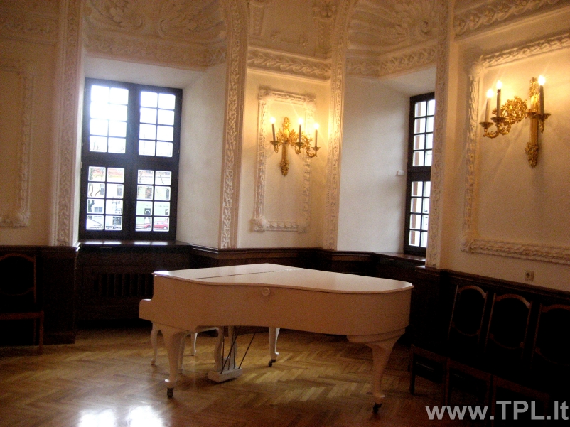

Fortepijonas - Kūdikiai Fortepijonas kaip progreso auka ; Ar kada pagalvojote apie kelią, kurį turi pereiti atskiri, kasdieniai objektai, kurie supa mus kasdieniame gyvenime?> Jei apie tai negalvojote ar jums tiesiog nuobodu su istorija, aš iškart jus perspėsiu perskaityti: taip, bus datų ir jų bus daug. faktai, kuriuos pabandysiu padaryti, kiek mano kuklios galios, nėra tokie sausi, kaip jų mokytojai teigė ...
Fortepijono istorija pasaulio progreso kontekste ... Erdvę taupantis, puikaus skambesio, mažas fortepijonas ( A91/ P136/G55 CM, svoris 150 kg). Tarp „Art Deco“ ir „Bauhaus“: Sukurtas Ferdinando Manthey ir gaminamas buvo 1960s/1970s iki 1983metų.
Fortepijonai | Instrumentai | Klavišiniai instrumentai ... Fortepijonas – klavišinis muzikos instrumentas, dažniausiai naudojamas koncertams. Jo vibratorius – stygos. Kad stygos pasidarytų tamprios, reikia jas iš anksto viena kryptimi įtempti. ...
fortepijonas - išsamiai DELFI.lt Kauno berniukų chorinio dainavimo mokykla „Varpelis“ D. Poškos g. 4, Kaunas Tel. 8 (37) 320 486. Duomenys kaupiami ir saugomi Juridinių asmenų registre Įstaigos kodas 190144268
Fortepijonas - LRT Fortepijonas #Fortepijonas. 26:14. 98. Tarp dalių (ne)plojama 2020.09.05 10:30. Tarp dalių (ne)plojama. Pramintas „karališkuoju“ ir „instrumentu-orkestru“ – fortepijono istorija ir subtilybės. 98. 18. Euroradijo koncertas 2020.09.04 23:15. Euroradijo koncertas. Eliso Virsaladze atlieka Čaikovskio, Prokofjevo ir Schumanno kūrinius
Fortepijonas - lm fortepijonas - klavišinis styginis instrumentas, didesnis nei pianinas.Jis dažnai naudojamas koncertuose ir kituose viešuose renginiuose. Vertimai [] fortepijonas: klavišinis styginis instrumentas
FORTEPIJONAS Fortepijonas – klavišinis muzikos instrumentas, dažniausiai naudojamas koncertams. Jo vibratorius – stygos. Kad stygos pasidarytų tamprios, reikia jas iš anksto viena kryptimi įtempti. Fortepijonas išsiskiria dideliu diapazonu, turtingu tembru ir judria skambesio dinamika.
fortepijonas, klasikinis, organas, mediena, senas ... Fortepijonas (pasiklausykite) – populiariausias klavišinis muzikos instrumentas.Pirmąjį fortepijoną apie 1700 m. pagamino italas Bartlomėjas Kristoforis, mėginęs sukurti klavišinį instrumentą, kuris būtų jautresnis muzikanto rankos prisilietimui negu klavesinas.
Menų studija „Žaismas“ » Fortepijonas Mano pačios grojamas instrumentas – fortepijonas. Tai klavišinis muzikos instrumentas, dažniausiai naudojamas koncertams. Jo vibratorius – stygos. Kad stygos pasidarytų tamprios, reikia jas iš anksto viena kryptimi įtempti. Fortepijonas išsiskiria dideliu diapazonu, turtingu tembru* ir judria skambesio dinamika*. Fortepijonas turi nuo 214 iki 245 plieninų stygų.

X Dėl geresnės Skelbiu.lt paslaugų kokybės naudojame slapukus (angl. cookies). Naršydami toliau, patvirtinate, kad sutinkate su slapukais. Tai bet kada galėsite atšaukti, pakeisdami nustatymus. Skelbiu.lt slapukų politika . Lankomiausias skelbimų portalas LT RU ( 0 ) Įsiminti skelbimai ( 0 ) Peržiūrėti skelbimai Paieškos ( 0 ) Prisijungti Registruotis fortepijonas, Visi skelbimai (20) Gauti naujus skelbimus: Ekrane El. paštu + Įdėti skelbimą Įsiminti skelbimai (0) Skelbimų: 20 Tinkamiausi viršuje Tinkamiausi viršuje Naujausi viršuje Atnaujinti viršuje
NEPRALEISKITE NAUJŲ SKELBIMŲ
fortepijonas, Visi skelbimai
Gaukite naujus skelbimus į ekraną Gaukite naujus skelbimus el. paštu Kaunas spalio 13 d. 1
Saksofono muzika visoms progoms
Muzika saksofonu-vestuves,krikstynos,gimtadieniai,fursetai ir t.t. Repertuaras nuo klasikos iki dziazo standartu.Groju su fonogramomis,galiu ir vienas,solo.Kokybiska aparatura,geras garsas.Galimas atlikimas-saksofonas+fortepijonas... Rokiškio r. rugsėjo 28 d.
Fortepijonas -antikvaras
Tikros muzikos gerbėjams ir suprantantiems, daugiau nei šimto metų senumo antikvaras 1845 m. fortepijonas Krall i Seidler, w Warszawie. Grojantis, tačiau išsiderinęs. Restauruoti plaktukėliai, išorė palikta autentiška. (Toks stovi Rokiškio dvare... Būklė: naudota 1 000 € Kaunas, ... prieš 1 d.
Fortepijonas Irmler
Fortepijonas Irmler Kaunas, Vilnius Labai geros būklės (mažai naudotas), baltas, lakuotas, Renner mechanika, gražaus skambesio, 1.62 m. Ilgio fortepijonas. Aukšto lygio meistro aptarnavimas įskaičiuota į pianino kainą. Suteikiama... Būklė: naudota Kaunas, ... prieš 1 d.
Fortepijonas Ed. Seiler
Geros būklės, aukštos klasės, (Renner mechanika), pagamintas Vakarų Vokietijoje. 1.70 m. ilgio fortepijonas. Atvežimas, garantija ir aukšto lygio meistro aptarnavimas įskaičiuotas į fortepijono kainą. Suteikiama fortepijono pakeitimo... Būklė: naudota Kaunas spalio 19 d.
Konstruktorius Pianinas (bet iš tiesų - fortepijonas), tinka vaikams nuo 6 metų, 141 detalė. Naujas, detalės neišpakuotos. Komplekte yra surinkimo instrukcija. Kaina skelbime galutinė. Galima Jūsų sąskaita siuntimas į kitus... Būklė: nauja 10 € Klaipėda, ... spalio 19 d.
Koncertinės klasės fortepijonas
Parduodamas baltas koncertinis fortepijonas Steinweg Nachf. Grotrian ( Vokietija) . Serijos nr. 15245. Kokybiškai restauruotas Vokietijoje. Instrumentas Klaipėdoje. Garantija 3 metai. Pristatymas visoje Lietuvoje nemokamai. Matmenys: ilgis - 195... 15 000 € Kaunas, ... prieš 1 d.
Fortepijonas Grotrian Steinweg
Faktiškai naujas, gražaus skambesio, aukštos klasės, spalva-juoda (blizgus lakas), pagamintas Vokietijoje, 1.90 m., fortepijonas. Aukšto lygio meistro aptarnavimas įskaičiuota į fortepiono kainą. Suteikiama instrumento pakeitimo galimybė į... Būklė: naudota Švenčionių r. prieš 1 d.
Antikvarinis fortepijonas
Senovinis fortepijonas. Gali būti naudojamas kaip interjero detalė. Kaina sutartinė 1 € Vilnius spalio 10 d.
Antikvarinis fortepijonas J.becker
Parduodu unikalu antikvarini fortepijona, pagaminta 1890-1900 metais Peterburge. Nuostabi interjero detale, klavisai pagaminti is dramblio kaulo, visi veikia, norint rimciau groti, reiketu suderinti. Kaina simboline, 250 Euru. 250 € Šiauliai, ... prieš 2 d.
Petrof kabinetinis fortepijonas
Kabinetinis fortepijonas Petrof Tvarkinga mechanika, puikiai laiko derinimą, kauliniai klavišai, reikalinga išorės restauracija. Tai tiesiog retas ir labai geras instrumentas už dar geresnę kainą. Būklė: naudota 1 050 € Reklama Kaunas prieš 1 val.
Fortepijonas Grotrian Steinweg
Fortepijonas Grotrian Steinweg kabinetinis Vokiečiu g-bos, dramblio kaulo klavišai. Pristatymas visoje Lietuvoje. Sekite naujienas facebooke http://www.facebook.com/Muzikos.instrumentai Kaina sutartinė Būklė: naudota Kaunas rugpjūčio 11 d.
Fortepijonas parduodamas piano for sale
Būklė: naudota 100 € Vilnius rugsėjo 30 d.
Vaikiškas laptopas
Nuostabus žaislas vaikams iki 3 m. Groja 5 skirtingas melodijas, kiekvieną melodiją gali groti 5 skirtingais instrumentais (smuikas, ksilofonas, trimitas, fortepijonas ir saksofonas) ir papildomai jūsų vaikas gali pridėti gyvūnų garsus ... Būklė: naudota 5 € Vilnius spalio 21 d.
- Jokių Tarpininkavimo Mokesčių
Vilnius, Senamiestis, Vilniaus g. 48 m² | 2 kamb. | 2/4 a. | Centrinis | Mūrinis 499 € (10 €/m²) Klaipėda, ... prieš 1 val.
Vaikiški nauji žaisliniai fortepijonai
Puiki dovana artėjančių kalėdų proga - spalvingi fortepijonai Galimybė prijungti telefoną / mp3 grotuvą Galimybė žaisti karoke 36 klavišai Iš anksto užprogramuotos melodijos Daugybė funkcijų garsams pakeisti Konstrukcija, panaši į tikrą... Būklė: nauja 51 € Kaunas prieš 30 min.
Auto: PEUGEOT 806. Kaina 2. MAN TRUCKERS WORLD. Kaina 2. 1980m. ALFA ROMEO. Kaina 3. LINAVA. Kaina 5. Avia: TP GEAR Naikintuvas(Tornado). Kaina 4.(parduotas) AIRBUS A320 CONDOR BERLIN. Kaina 3. Lėktuvas. Kaina 2.(parduotas). Medicina:... 1 € Vilnius prieš 1 d.
Populiariausias El. Pianinas Yamaha P-45 424eur
Populiariausias Skaitmeninis Pianinas Yamaha P-45B Geriausia kaina 424Eur. Kieta, fortepijoninė Hammer Action klaviatūra 88 klavišai, 10 Aukščiausios kokybės Sempluotų garsų: Fortepijonas , Pianinas, Elektrinis Pianinas, Vargonai,... Būklė: nauja 424 € Klaipėda, ... prieš 3 val.
Fortepijonai įvairūs
Daugiau info interneto svetainėje, puslapio apačioje.pianinas.weebly.c o m Fortepijonų derinimas ir remontas 868236089 Galiu pasiūlyti ir kitų pianinų ir fortepijonų už konkurencingą kainą. Ieškokite mūsų interneto svetainėje skiltyje... Būklė: naudota 2 700 € Kaunas, ... prieš 1 d.
Žaislinis pianinas (4 rūšys)
Būklė - Naujas 1. Žaislinis pianinas "Kirmėliukas" Kaina 7.50€ (1 nuotrauka) Tai puiki dovana kiekvienam mažam vaikui. Be įdomios išvaizdos, geros kokybės plastiko ir malonių pastelinių spalvų, pianinas turi daugybę funkcijų ir žaidimo režimų... Būklė: nauja 6,99 € Kaunas, ... prieš 1 d.
Sintezatorius - pianinas su mikrofonu Ag278
Muzika yra tiesiog neatsiejama gyvenimo dalis. Nuo pat mažų dienų mes esame pratinami prie įvairių muzikos garsų ir ne tik: lopšinės, įvairūs garsus skleidžiantys garsai ir kt. Galbūt laikas leisti savo vaikams patiems pradėti kurti muziką? Šis... Būklė: nauja 23,75 € E. parduotuvės prekė Lietuvių kompozitorių kūriniai birbynei ir fortepijonui patogupirkti.lt 7.99 € E. parduotuvės prekė Pažangus daugiafunkcinis fortepijonas abczaislai.lt 56.11 € E. parduotuvės prekė Pažangus daugiafunkcinis fortepijonas varle.lt 66.22 € E. parduotuvės prekė Vaikiškas fortepijonas su mikrofonu abczaislai.lt 24.36 € E. parduotuvės prekė Vaikiškas fortepijonas su mikrofonu varle.lt 28.74 € Daugiau prekių Kainos.lt » Įsiminti skelbimai Įdėkite skelbimą
Populiarios paieškos:
fortepijonas vilnius
fortepijonas klaipeda
fortepijonas kaunas
Prisijunk ir rask savo įsimintus skelbimus visur – kompiuteryje, telefone, planšetėje ARBA Jungtis su Facebook Jungtis su Google Skelbiu.lt pagalba: +370 664 55727 Darbo laikas: I-V 08:20 - 17:00 Naudojimo taisyklės / D.U.K. Kontaktai Svetainės struktūra D I G I N E T